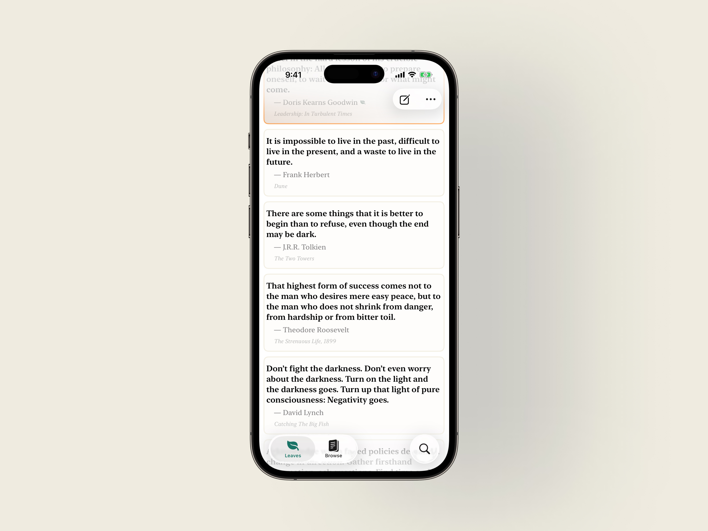
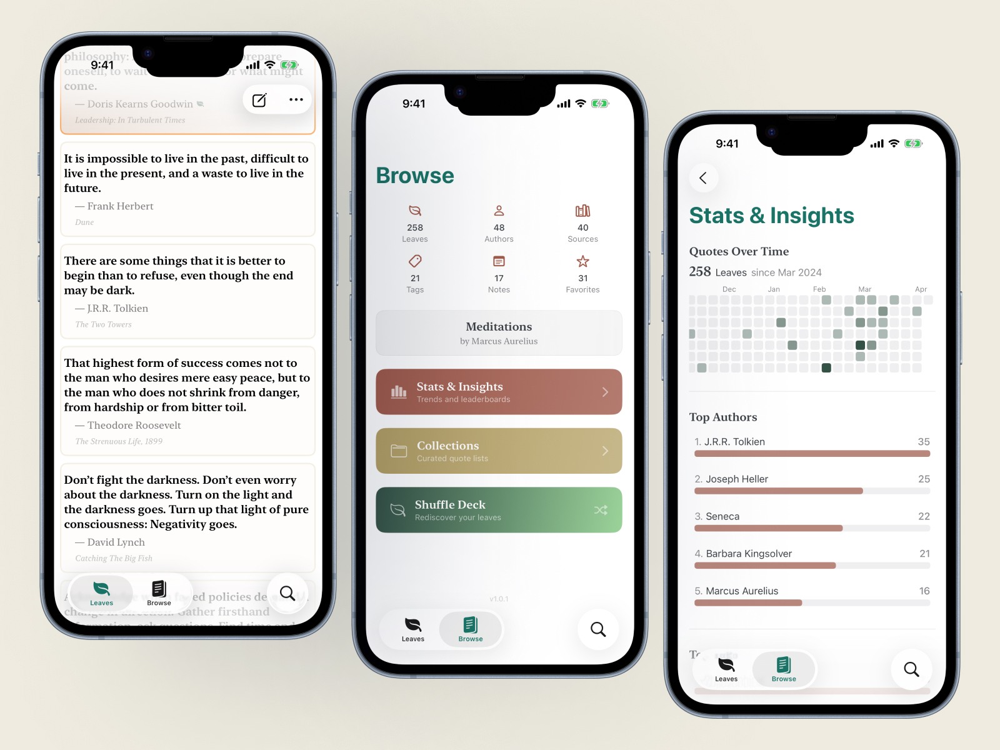

A reading journal for the quotes you want to remember.

Reading leaves marks — a line that stops you mid-page, a passage you re-read three times, a sentence that names something you'd felt but never said. InkLeaf is where those marks live. Capture quotes as you read, organize them by book and author, and build a library that grows with you.

Designed for the way readers actually work — in stolen moments, at the end of a chapter, or mid-commute with a dog-eared page.
Loading latest release…
Join the TestFlight beta today.